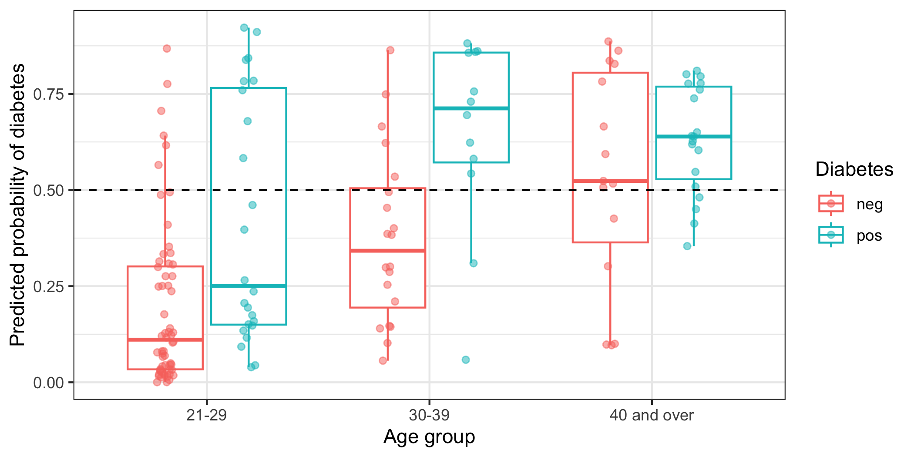
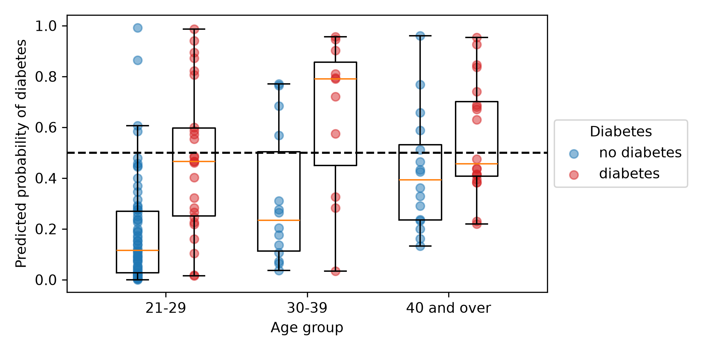

# Packages for this exercise. If one is missing, remove the # and run this line once:
# install.packages(c("tidyverse", "tidymodels", "ranger"))
library(tidyverse)
library(tidymodels)
theme_set(theme_bw()) # white background for every plot
options(pillar.sigfig = 3) # show three significant figures in tablesExercise 9.4 — For whom is the model worst?
ImportantA suggested addition, not part of the original module
This exercise has no page in the original version of the module. Exercises 9.1 to 9.3 explain the model as a whole and one patient at a time; this one asks whether it works equally well for different groups of patients. Accept, rewrite or remove it; nothing else depends on it.
One test AUC describes the model for all the test patients together. The model can still serve some groups much worse than others, and the overall number will not show it. Here we split the test patients by age and by BMI and compare.
NoteThe plots are for looking at
The code for every plot is folded away just above it, in case you are curious, and all of it is in the notebook linked at the top of each tab. You are not expected to write it yourself.
Download this exercise as an R Markdown notebook (.Rmd): the text and every code cell of the R version, including the code for the plots, with the blanks left for you to fill in. Open it in RStudio and run it a chunk at a time.
The model
The same data (data/diabetes_clean.csv) and random forest as Exercises 9.1 to 9.3. As always, 80% of the people are used for training and 20% are held back as the test set.
diabetes <- read_csv("data/diabetes_clean.csv") |>
select(pregnant, glucose, mass, pedigree, age, diabetes) |>
mutate(diabetes = factor(diabetes, levels = c("neg", "pos")))
set.seed(42)
split <- initial_split(diabetes, prop = 0.8)
train <- training(split)
test <- testing(split)
rf_spec <- rand_forest(trees = 500) |>
set_engine("ranger") |>
set_mode("classification")
set.seed(1)
rf_fit <- rf_spec |>
fit(diabetes ~ ., data = train)
test_preds <- test |>
bind_cols(predict(rf_fit, new_data = test, type = "prob"),
predict(rf_fit, new_data = test))Evaluate it once on all the test rows (threshold 0.5):
class_metrics <- metric_set(accuracy, sens)
class_metrics(test_preds, truth = diabetes, estimate = .pred_class,
event_level = "second")#> # A tibble: 2 × 3
#> .metric .estimator .estimate
#> <chr> <chr> <dbl>
#> 1 accuracy binary 0.72
#> 2 sens binary 0.618roc_auc(test_preds, truth = diabetes, .pred_pos, event_level = "second")#> # A tibble: 1 × 3
#> .metric .estimator .estimate
#> <chr> <chr> <dbl>
#> 1 roc_auc binary 0.753Accuracy 0.720, sensitivity 0.618, AUC 0.753. These are the overall numbers we will now break down.
Part 1 — Performance by age group
Put the test patients into three age groups. For each group, count the patients, the patients with diabetes and how many of those the model catches, then work out the accuracy and the sensitivity.
test_preds <- test_preds |>
mutate(age_group = cut(age, breaks = c(20, 29, 39, Inf),
labels = c("21-29", "30-39", "40 and over")))
test_preds |>
group_by(age_group) |>
summarise(patients = n(),
with_diabetes = sum(diabetes == "pos"),
caught = sum(diabetes == "pos" & .pred_class == "pos"),
accuracy = mean(.pred_class == diabetes),
sensitivity = caught / with_diabetes)#> # A tibble: 3 × 6
#> age_group patients with_diabetes caught accuracy sensitivity
#> <fct> <int> <int> <int> <dbl> <dbl>
#> 1 21-29 84 24 9 0.75 0.375
#> 2 30-39 32 12 10 0.781 0.833
#> 3 40 and over 34 19 15 0.588 0.789yardstick’s functions also work on grouped data, one row per group. The AUC for each age group:
test_preds |>
group_by(age_group) |>
roc_auc(truth = diabetes, .pred_pos, event_level = "second")#> # A tibble: 3 × 4
#> age_group .metric .estimator .estimate
#> <fct> <chr> <chr> <dbl>
#> 1 21-29 roc_auc binary 0.737
#> 2 30-39 roc_auc binary 0.8
#> 3 40 and over roc_auc binary 0.558Question! Which age group does the model serve worst?
It depends on the measure. In the youngest group the accuracy looks fine (0.750), but the model catches only 9 of the 24 people with diabetes (sensitivity 0.375); most young people do not have diabetes, so being right about them keeps the accuracy up. In the oldest group it catches 15 of 19, but it has the lowest accuracy (0.588) and an AUC of 0.558, close to the 0.5 of a coin toss. None of this shows in the overall numbers.
The plot shows the predicted probabilities in each age group, split by whether the patient really has diabetes. Most of the young people with diabetes sit below the 0.5 line.
Code for this plot (optional)
test_preds |>
ggplot(aes(x = age_group, y = .pred_pos, colour = diabetes)) +
geom_boxplot(outlier.shape = NA) +
geom_point(position = position_jitterdodge(jitter.width = 0.15, seed = 1), alpha = 0.5) +
geom_hline(yintercept = 0.5, linetype = "dashed") +
labs(x = "Age group", y = "Predicted probability of diabetes", colour = "Diabetes")
Part 2 — By BMI, and how far to trust a small group
Your turn. Do the same with two BMI groups: under 30, and 30 or over (the usual cut-off for obesity).
# Replace every ______ below, then run this cell.
test_preds <- test_preds |>
mutate(bmi_group = if_else(mass < ______, "under 30", "30 and over"))
test_preds |>
group_by(bmi_group) |>
summarise(patients = n(),
with_diabetes = sum(diabetes == "pos"),
caught = sum(diabetes == "pos" & .pred_class == "pos"),
accuracy = mean(.pred_class == diabetes),
sensitivity = caught / with_diabetes)
test_preds |>
group_by(______) |>
roc_auc(truth = diabetes, .pred_pos, event_level = "second")
TipStuck?
BMI is the column mass, and the cut-off is 30. Group by the new column, bmi_group.
How far can we trust these numbers? The sensitivity of 0.364 in the BMI-under-30 group rests on 11 people: 4 caught out of 11. One more caught would make it 0.455, one fewer 0.273. With so few people, one patient moves the number a long way, and a different random split could tell a different story. Differences between small groups are a reason to look again with more data, not a finding. That is why the counts always go beside the metrics.
TipKey points
- The overall numbers can hide large differences between groups of patients.
- Which group looks worst depends on the measure: accuracy, sensitivity and AUC answer different questions.
- Always report how many patients, and how many with the outcome, each group’s numbers rest on. A few people give unstable numbers.
Download this exercise as a Jupyter notebook (.ipynb): the text and every code cell of the Python version, including the code for the plots, with the blanks left for you to fill in. Open it in Jupyter or VS Code and run it a cell at a time.
The model
# Packages for this exercise. If one is missing, install it once from a terminal
# (in a Jupyter notebook, type %pip instead of pip):
# pip install pandas numpy matplotlib scikit-learn
import pandas as pd
import numpy as np
import matplotlib.pyplot as plt
from sklearn.model_selection import train_test_split
from sklearn.ensemble import RandomForestClassifier
from sklearn.metrics import accuracy_score, recall_score, roc_auc_scoreThe same data (data/diabetes_clean.csv) and random forest as Exercises 9.1 to 9.3. As always, 80% of the people are used for training and 20% are held back as the test set.
diabetes = pd.read_csv("data/diabetes_clean.csv")
diabetes = diabetes[["pregnant", "glucose", "mass", "pedigree", "age", "diabetes"]]
diabetes["diabetes"] = (diabetes["diabetes"] == "pos").astype(int) # 1 = pos, 0 = neg
predictors = ["pregnant", "glucose", "mass", "pedigree", "age"]
train, test = train_test_split(diabetes, test_size=0.2, random_state=42)
rf = RandomForestClassifier(n_estimators=500, random_state=1)
rf = rf.fit(train[predictors], train["diabetes"])
test_preds = test.copy()
test_preds["prob"] = rf.predict_proba(test[predictors])[:, 1] # probability of diabetes
test_preds["pred"] = rf.predict(test[predictors]) # predicted class, threshold 0.5Evaluate it once on all the test rows (threshold 0.5):
print("accuracy ", round(accuracy_score(test_preds["diabetes"], test_preds["pred"]), 3))#> accuracy 0.713print("sensitivity", round(recall_score(test_preds["diabetes"], test_preds["pred"]), 3))#> sensitivity 0.474print("AUC ", round(roc_auc_score(test_preds["diabetes"], test_preds["prob"]), 3))#> AUC 0.794Accuracy 0.713, sensitivity 0.474, AUC 0.794. These are the overall numbers we will now break down.
Part 1 — Performance by age group
Put the test patients into three age groups. The loop takes one group at a time and records the number of patients, the patients with diabetes, how many of those the model catches, the accuracy, the sensitivity and the AUC.
test_preds["age_group"] = pd.cut(test_preds["age"], bins=[20, 29, 39, np.inf],
labels=["21-29", "30-39", "40 and over"])
rows = []
for group, patients in test_preds.groupby("age_group", observed=True):
rows.append({"age_group": group,
"patients": len(patients),
"with_diabetes": patients["diabetes"].sum(),
"caught": ((patients["diabetes"] == 1) & (patients["pred"] == 1)).sum(),
"accuracy": accuracy_score(patients["diabetes"], patients["pred"]),
"sensitivity": recall_score(patients["diabetes"], patients["pred"]),
"roc_auc": roc_auc_score(patients["diabetes"], patients["prob"])})
pd.DataFrame(rows).round(3)#> age_group patients with_diabetes caught accuracy sensitivity roc_auc
#> 0 21-29 89 26 10 0.775 0.385 0.803
#> 1 30-39 25 11 8 0.720 0.727 0.818
#> 2 40 and over 36 20 9 0.556 0.450 0.669Question! Which age group does the model serve worst?
It depends on the measure. In the youngest group the accuracy looks fine (0.775), but the model catches only 10 of the 26 people with diabetes (sensitivity 0.385); most young people do not have diabetes, so being right about them keeps the accuracy up. The oldest group has the lowest accuracy (0.556) and the lowest AUC (0.669), and the model catches only 9 of its 20 cases. None of this shows in the overall numbers.
The plot shows the predicted probabilities in each age group, split by whether the patient really has diabetes. Most of the young people with diabetes sit below the 0.5 line.
Code for this plot (optional)
groups = ["21-29", "30-39", "40 and over"]
fig, ax = plt.subplots(figsize=(7, 3.5))
for shift, outcome, colour in [(-0.2, 0, "tab:blue"), (0.2, 1, "tab:red")]:
for i, group in enumerate(groups):
values = test_preds.loc[(test_preds["age_group"] == group) &
(test_preds["diabetes"] == outcome), "prob"]
ax.boxplot(values, positions=[i + shift], widths=0.3, showfliers=False)
ax.scatter(np.full(len(values), i + shift), values, color=colour, alpha=0.5,
label=("diabetes" if outcome == 1 else "no diabetes") if i == 0 else None)
ax.axhline(0.5, color="black", linestyle="--")
ax.set_xticks(range(len(groups)))
ax.set_xticklabels(groups)
ax.set_xlabel("Age group")
ax.set_ylabel("Predicted probability of diabetes")
ax.legend(title="Diabetes", loc="center left", bbox_to_anchor=(1, 0.5))
fig.tight_layout()
plt.show()
Part 2 — By BMI, and how far to trust a small group
Your turn. Do the same with two BMI groups: under 30, and 30 or over (the usual cut-off for obesity).
# Replace every ______ below, then run this cell.
test_preds["bmi_group"] = np.where(test_preds["mass"] < ______, "under 30", "30 and over")
rows = []
for group, patients in test_preds.groupby(______):
rows.append({"bmi_group": group,
"patients": len(patients),
"with_diabetes": patients["diabetes"].sum(),
"caught": ((patients["diabetes"] == 1) & (patients["pred"] == 1)).sum(),
"accuracy": accuracy_score(patients["diabetes"], patients["pred"]),
"sensitivity": recall_score(patients["diabetes"], patients["pred"]),
"roc_auc": roc_auc_score(patients["diabetes"], patients["prob"])})
pd.DataFrame(rows).round(3)
TipStuck?
BMI is the column mass, and the cut-off is 30. Group by the new column, "bmi_group".
How far can we trust these numbers? The sensitivity of 0.083 in the BMI-under-30 group rests on 12 people: 1 caught out of 12. One more caught would double it to 0.167. With so few people, one patient moves the number a long way, and a different random split could tell a different story. Differences between small groups are a reason to look again with more data, not a finding. That is why the counts always go beside the metrics.
TipKey points
- The overall numbers can hide large differences between groups of patients.
- Which group looks worst depends on the measure: accuracy, sensitivity and AUC answer different questions.
- Always report how many patients, and how many with the outcome, each group’s numbers rest on. A few people give unstable numbers.